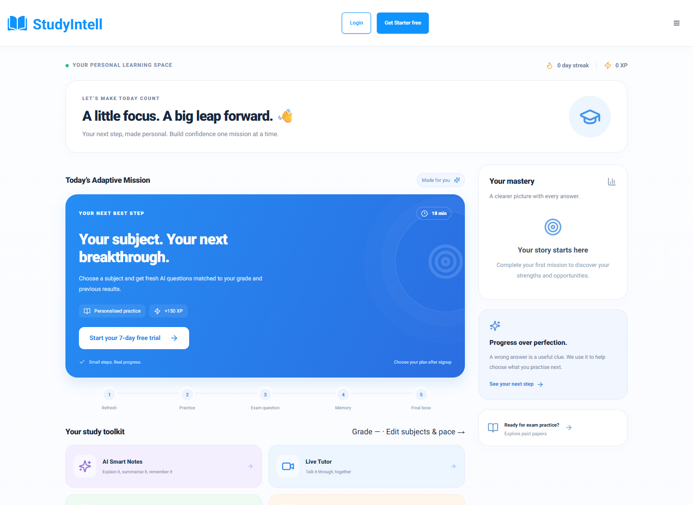

StudyIntell ↗
A little focus. A real breakthrough.
An educational platform bringing study resources, AI Smart Notes and adaptive practice into one learning experience.
- Grade-aware notes and assessments
- Evidence-based mastery, separate from XP
- Saved missions with server-owned timers
Founder & developer. Adaptive learning, billing and access-control updates are now in the repository. Live deployment of this release is not verified.
STUDYINTELL / ADAPTIVE MISSION
